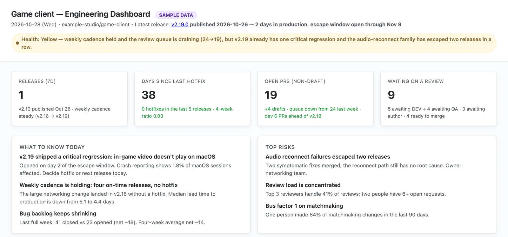
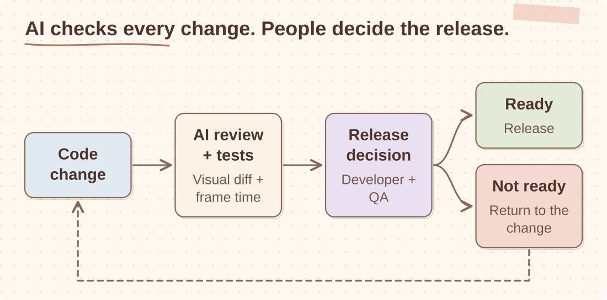
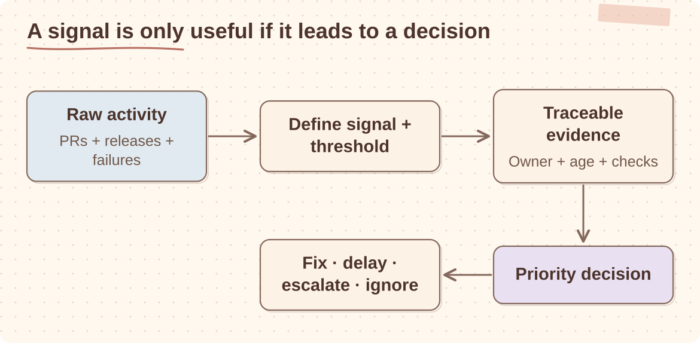
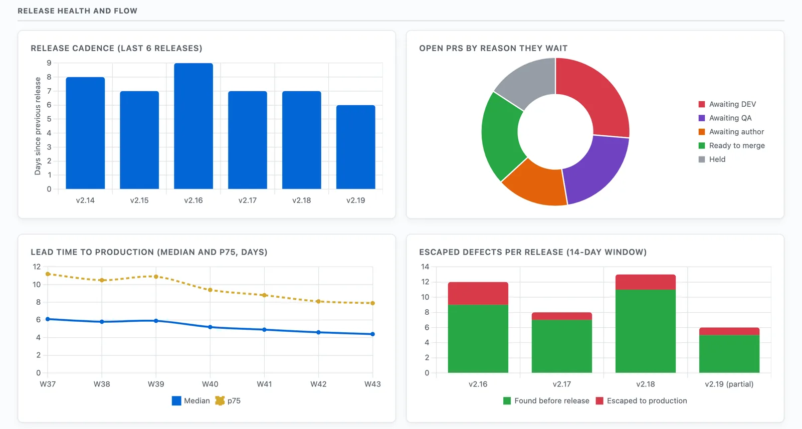

Case study
Engineering Dashboard and AI Checks
The checks on every Unity Explorer pull request and the daily dashboard I built for release and priority reviews, so those decisions started from evidence rather than a weekly scramble for status.
GitHub Actions / scheduled agents / Sentry MCP / Unity Cloud costs / priority reviews / AI-assisted notes
Problem
With frequent releases, information was spread across GitHub, Sentry, Unity Cloud and several reports. I built one view for the questions I kept asking in priority and release reviews. Scheduled agents collect the data and prepare summaries, with links back to the underlying issues and pull requests.

Checks on every pull request
AI review on every PR
Each pull request carries an AI review status check that analyses correctness, performance and error handling and sets pass/fail. It runs before developer and QA approval, not instead of it.
Visual regression as a comment
A PR comment triggers a pixel-diff suite against committed image baselines and posts the verdict back to the PR; a second command regenerates baselines when a change is intentional. Rendering regressions show up in review instead of depending on whether QA happened to spot them.
Performance signal per PR
Successful builds dispatch frame-time benchmarks on a dedicated machine fleet, and the results come back to the PR as a comment with CPU, GPU and exception data. A performance regression is visible before merge, not after release.
Where AI sits
Automation produces early evidence. People still decide what ships.

Goals
- One daily view for release and priority reviews.
- Release, CI, Sentry and team-load data in one place.
- Unity Cloud costs next to engineering activity.
- Less time spent collecting status by hand.
- No new process just to feed the dashboard.
Architecture
Raw activity becomes a decision only after its meaning is defined.

What it computes
Each run collects four groups of information:
- Flow: lead time to production (median and p75, with sample sizes), PR aging bucketed by reason it waits: on the author, on developer review, on QA, or ready to merge.
- Quality: escaped defects per release (pre-release vs 14-day escape window), regression rate per release, rework rate with confidence tags, hotfix pressure.
- Team: review distribution and concentration, QA queue size, bus factor per critical system over a 90-day window, with former-employee attribution flagged as a knowledge gap.
- Operations: CI health, release deltas, Sentry signals, Unity Cloud build costs.

Decisions that mattered
- AI checks run before people, not instead of them. Every pull request still needs developer and QA approval. The AI check raises the floor before people spend attention.
- Ask for something concrete. A pass or fail, a pixel diff, a frame-time change. Output that repeatedly changed nothing in review was removed.
- Pin every metric definition. Each metric has a fixed formula, window and exclusions, recorded next to the code. When a definition changes, the next report says so, so a delta is never a quiet redefinition.
- Link every number to its records. Ratios come with the exact issues and pull requests counted, so anyone can re-derive them.
- Turn corrections into rules. A lessons file records each mistake as a rule the next run applies: cumulative totals are not trends, duplicates are excluded and named, partial windows are flagged.
Lessons learned
- The checks that stuck were attached to an existing review or release step.
- Quality checks were worth more than measuring how much code AI generated.
- The dashboard became useful once it was part of the priority review. We removed the metrics nobody used.